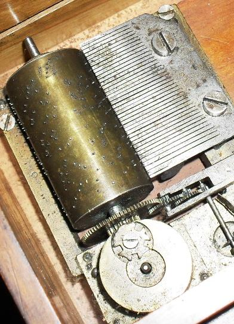

Fejléc
Leonardo da Vinci
Belső tartály
Zenélő szerkezetek
A verkli és kintorna mechanikus hangszer, az oldalán lévő kar tekerésével a játékos egyszerre táplálja a fújtatókat, és működtet egy kis fémszögecskékkel ellátott, forgó hengert (verkli) vagy lyukszalagot (kintorna), s a szögecskék vagy lyukak közvetítésével, szelepeken továbbítódik a levegő a síprendszerhez.
A szögecske vagy lyuk elhelyezkedése dönti el, hogy melyik síp szólal meg, és mikor. Eredete igen régi időkre nyúlik vissza. A 18–19. században gyakran használták templomokban is, de utcai hangszerként is kedvelt volt, sokszor egy majom ült a tetején. A hangszer Molnár Ferenc: A Pál utcai fiúk című regényében is felbukkan a Józsefváros utcáin.
Az automata és kézi hajtású zenegépek története sok száz évvel ezelőtt kezdődött, több nemzet, ország vallja magáénak a kintorna feltalálását. Fejlődésük a felvilágosodás korától a második világháborúig kíséri és hűen tükrözi a társadalom, a technika és a művészetek fejlődését. A zenélő automaták és szerkezetek története összekapcsolódott olyan nagy emberekkel, mint Leonardo da Vinci, Athanasius Kircher, a tudós jezsuita páter vagy a magyar Kempelen Farkas. Észak-Olaszországban, a Németalföldön, Szászországban kiterjedt ipara volt a zenélő automatáknak. Egyes cégek csak a dobozok, sípok készítésével, míg mások a zeneművek kottázásával, szöges hengerekre, papírcsíkokra, bádogkorongokra történő átírásával foglalkoztak.
A verkli és kintorna mechanikus hangszer, az oldalán lévő kar tekerésével a játékos egyszerre táplálja a fújtatókat, és működtet egy kis fémszögecskékkel ellátott, forgó hengert (verkli) vagy lyukszalagot (kintorna), s a szögecskék vagy lyukak közvetítésével, szelepeken továbbítódik a levegő a síprendszerhez.
A szögecske vagy lyuk elhelyezkedése dönti el, hogy melyik síp szólal meg, és mikor. Eredete igen régi időkre nyúlik vissza. A 18–19. században gyakran használták templomokban is, de utcai hangszerként is kedvelt volt, sokszor egy majom ült a tetején. A hangszer Molnár Ferenc: A Pál utcai fiúk című regényében is felbukkan a Józsefváros utcáin.
Az automata és kézi hajtású zenegépek története sok száz évvel ezelőtt kezdődött, több nemzet, ország vallja magáénak a kintorna feltalálását. Fejlődésük a felvilágosodás korától a második világháborúig kíséri és hűen tükrözi a társadalom, a technika és a művészetek fejlődését. A zenélő automaták és szerkezetek története összekapcsolódott olyan nagy emberekkel, mint Leonardo da Vinci, Athanasius Kircher, a tudós jezsuita páter vagy a magyar Kempelen Farkas. Észak-Olaszországban, a Németalföldön, Szászországban kiterjedt ipara volt a zenélő automatáknak. Egyes cégek csak a dobozok, sípok készítésével, míg mások a zeneművek kottázásával, szöges hengerekre, papírcsíkokra, bádogkorongokra történő átírásával foglalkoztak.
Lábléc